Which device starts a new broadcast domain on each of its ports?
- A hub is one broadcast domain.
- A switched network is one broadcast domain.
- Physical layer only.
- Routers don’t forward broadcasts between interfaces.
Hubs, link-layer switches and routers: which layer each works at, how a switch learns and filters, why loops cause broadcast storms and how spanning tree fixes them, collision vs. broadcast domains, store-and-forward vs. cut-through, and VLANs. Counting collision and broadcast domains in a drawing is the classic question here, so the notes show how to count.
Every original slide is shown unchanged. Yellow marks on a slide point to a numbered note: hover or tap a mark to jump to its note, and hover a note to see its marks. Questions tagged Past exam appeared on a real paper; Prediction questions are likely angles, not confirmed. Pick an answer to each question: a wrong pick tells you why it is wrong, so you can try again.
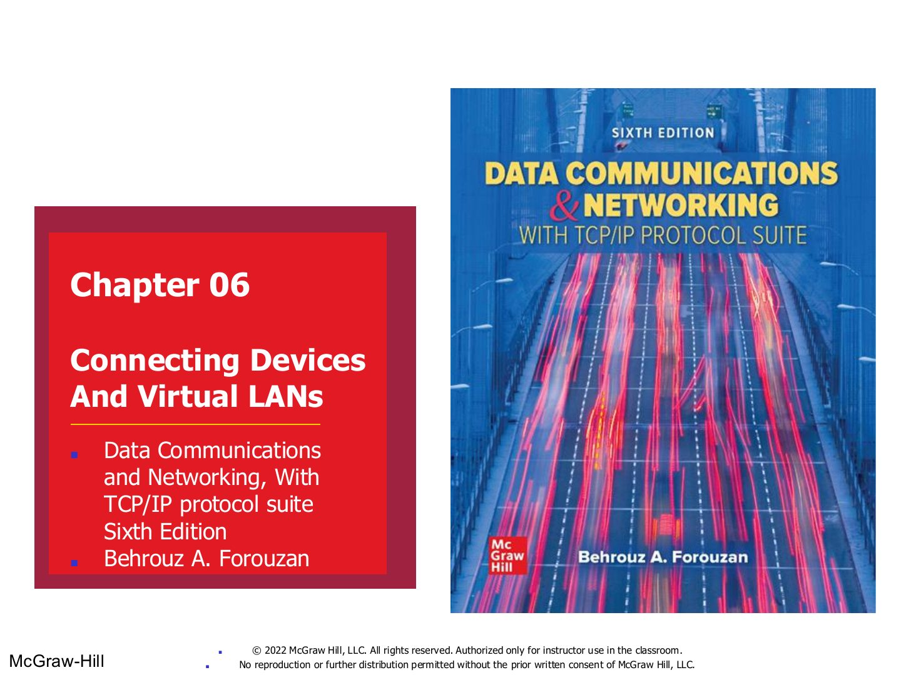
The deck climbs the layers: the hub (layer 1, repeats bits), the link-layer switch (layer 2, forwards frames by MAC address and learns where hosts are), and the router (layer 3, forwards packets by IP address). Along the way it explains collision domains and broadcast domains, the loop problem in switched networks and the spanning tree fix, and finally VLANs, which create broadcast domains in software. Counting domains in a diagram is the classic exam question, so practise it on slides 23, 24, 27 and 28.
Tip Counting domains: every switch or router PORT starts a new collision domain (a hub port does not). Every router PORT starts a new broadcast domain (switches and hubs do not, unless VLANs are used).
Which device starts a new broadcast domain on each of its ports?
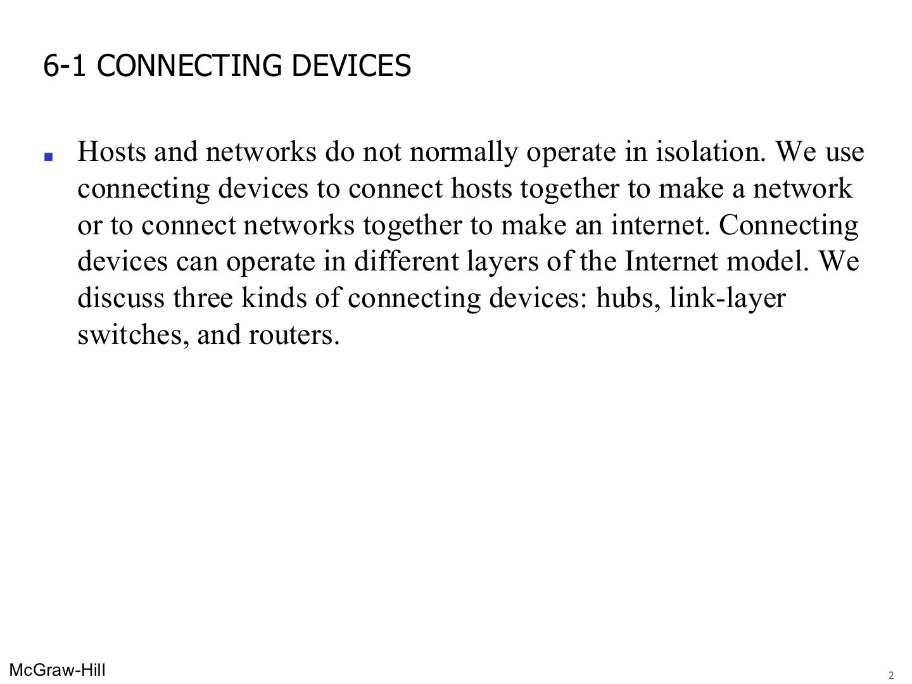
Hosts and networks rarely work alone. Connecting devices link hosts together into a network, or link networks together into an internet. Because they work at different layers of the model, they differ in what they can read (bits, MAC addresses or IP addresses) and so in how cleverly they forward traffic. The three covered here are hubs, link-layer switches and routers.
Which three connecting devices does the chapter discuss?
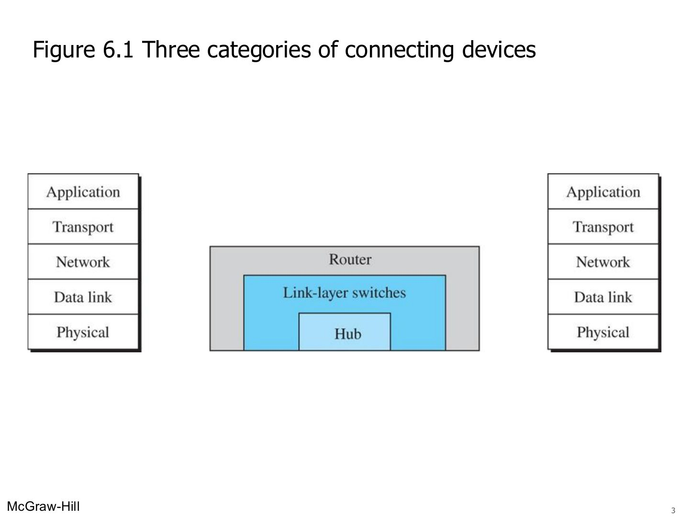
Each device covers the layers up to the one it works at. A hub works only at the physical layer. A link-layer switch works at the physical and data link layers. A router works up to the network layer. The higher a device goes, the more of each unit of data it understands, and the smarter its forwarding decisions.
Seen again Ch 1 Part 2, slide 5: Devices that don’t use all layers
A link-layer switch operates in which layers?
Which device works at the network layer?
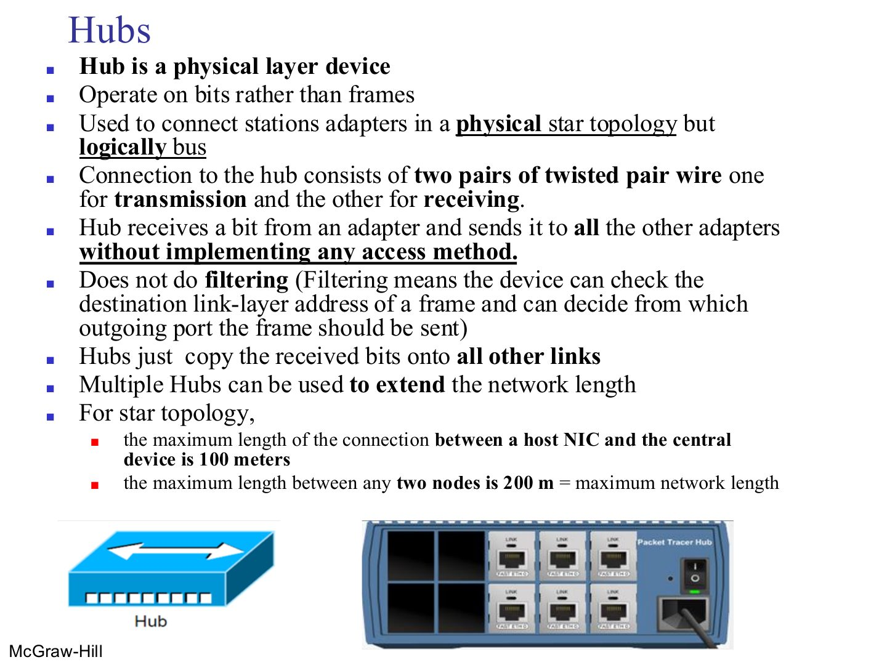
A hub is a physical-layer device: it works on bits, not frames, and doesn’t understand addresses at all. Stations plug into it in a physical star, but because it copies every signal to everyone, it behaves logically like a bus: one shared medium.
When a bit arrives on one port, the hub sends it out of all the other ports, without any access method of its own and without filtering. Filtering would mean reading the frame’s destination MAC address and choosing the right port; a hub can’t do that. So every station receives every frame, and if two send at once their signals collide. Hubs can be chained to extend a network. In a star, the cable from a host’s NIC to the hub can be at most 100 m, so two hosts on the same hub can be at most 200 m apart, which is the maximum network length.
Trap A hub does not read MAC addresses at all; it only repeats bits.
Seen again Ch 1 Part 2, slide 26: Physical-layer devices
A hub forwards a received bit to:
Topology of hosts connected to a hub:
A hub performs filtering using MAC addresses.
The maximum cable length from a host NIC to a hub is:
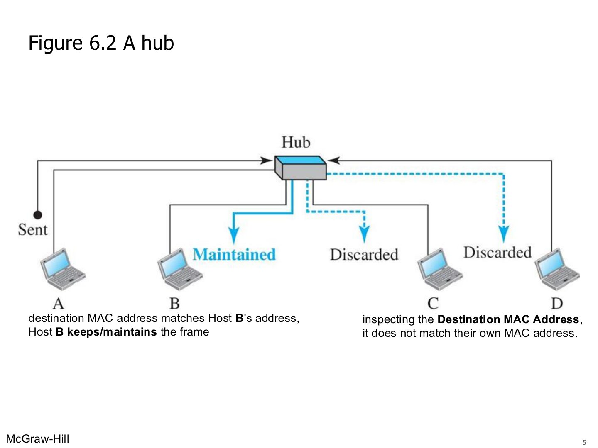
A sends a frame for B. The hub repeats it to B, C and D. Each NIC checks the destination MAC address in the frame: B sees its own address and keeps the frame; C and D see someone else’s address and discard it. The filtering happens in the NICs, not in the hub, and the frame still used up everyone’s link.
A sends a frame to B through a hub. Who discards the frame?
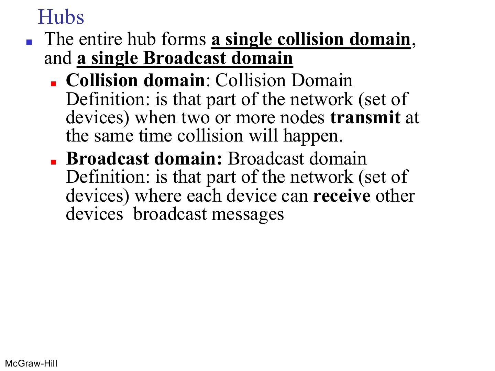
A collision domain is the part of the network (the set of devices) in which, if two or more nodes transmit at the same time, their frames collide. On a hub, any two stations can collide, so the whole hub is one collision domain.
A broadcast domain is the part of the network in which every device receives the other devices’ broadcast messages. A hub repeats broadcasts to everyone, so the whole hub is one broadcast domain too. Simple way to tell them apart: collision = who can crash into each other when sending; broadcast = who hears each other’s broadcasts.
Memory trick Collision = who can crash into each other. Broadcast = who can hear each other’s shouting.
Five PCs are connected to one hub. How many collision domains?
Define collision domain and broadcast domain.
A collision domain is the part of a network where two devices sending at the same time collide. A broadcast domain is the part where every device receives the others’ broadcast messages.
Five PCs on one hub form how many broadcast domains?
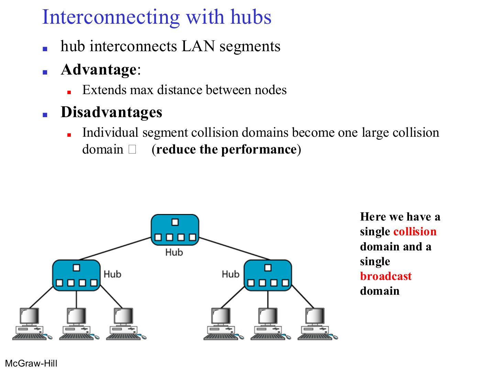
Joining LAN segments with hubs has one advantage: it extends the maximum distance between nodes, since each hub adds another 100 m of reach. The disadvantage: the separate segments’ collision domains merge into one large collision domain. Now a station in one department can collide with a station in another, and every station shares the same bandwidth, so performance drops as the network grows.
What is the disadvantage of interconnecting segments with hubs?
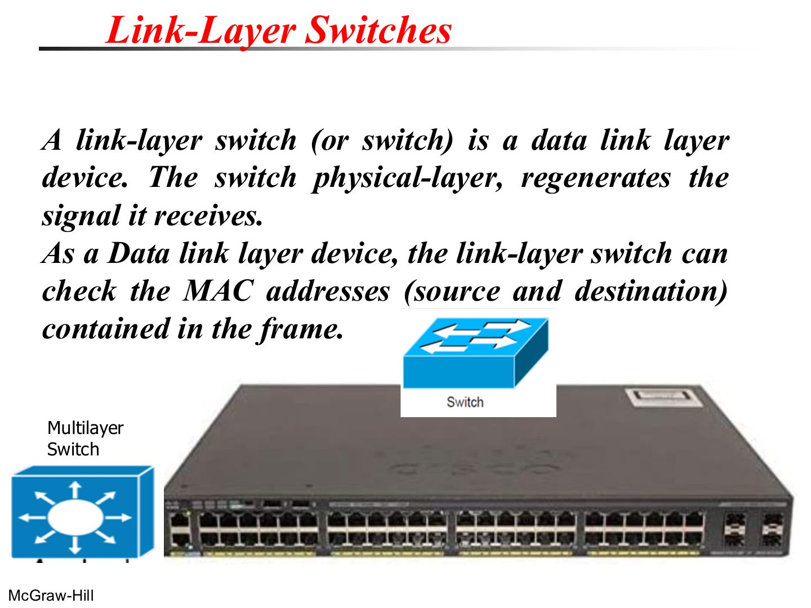
A link-layer switch is a data link layer device. It also does physical-layer work: it regenerates the signal it receives, like a hub. The difference from a hub is that, as a data link device, the switch can read the MAC addresses (source and destination) in each frame, and use them to decide where the frame should go.
What can a switch do that a hub can’t?
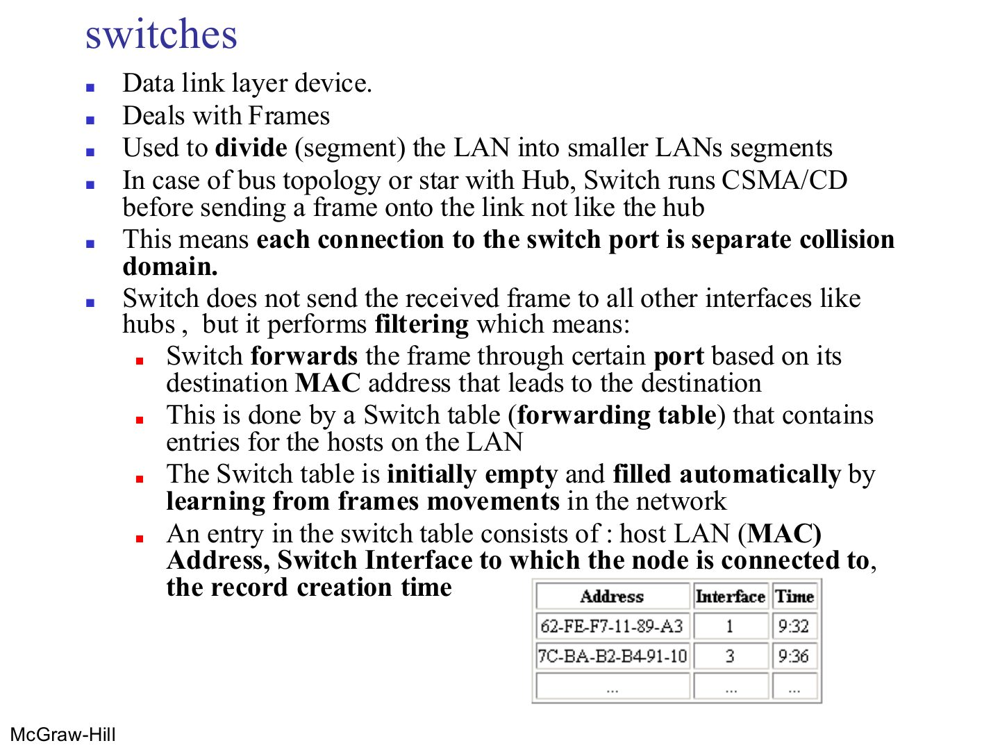
Where a medium is still shared (a bus or a hub on one of its ports), the switch runs CSMA/CD before sending, so each switch port is a separate collision domain: a collision on one port doesn’t affect any other. And it filters: instead of copying a frame to every port, it forwards it only out of the port that leads to the destination MAC address.
To know which port leads where, the switch keeps a forwarding table (switch table, MAC table). The table starts empty and fills automatically by learning from the frames passing through: nobody configures it. Each entry holds a host’s MAC address, the switch interface it is connected to, and the time the entry was created (old entries expire so the table stays current when hosts move).
A switch’s forwarding table is initially:
A switch table entry contains:
Each connection to a switch port is a separate collision domain.
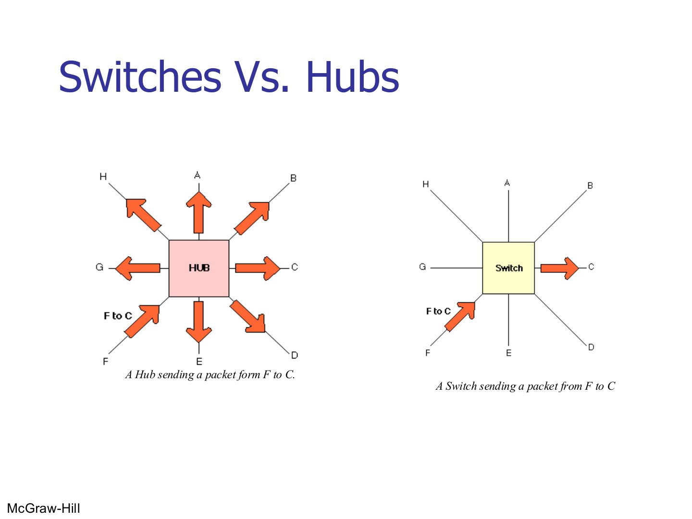
The two pictures side by side. A hub receiving a packet from F sends it out of every port. A switch receiving the same packet sends it only to C, the destination. The other links stay free for other traffic, which is why a switch improves performance and privacy.
A frame from F is meant for C. Where does a switch send it?
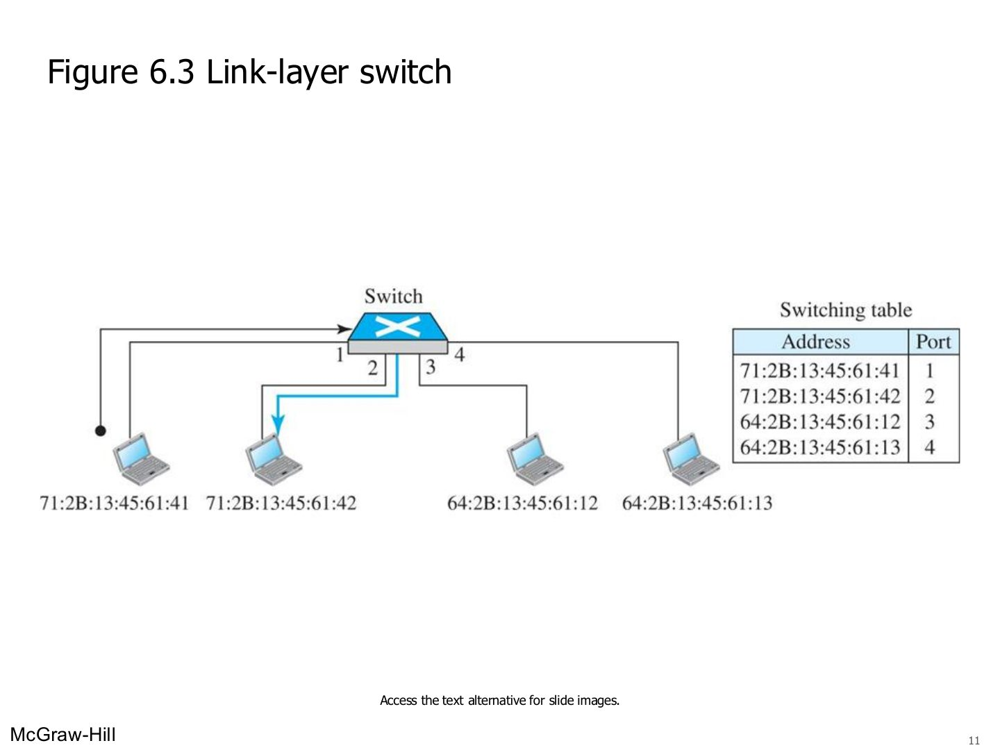
The switching table is just a list of MAC address → port. Here four hosts are listed, each against the port (1 to 4) it is connected to. When a frame arrives, the switch looks up its destination MAC in this table to find the outgoing port.
What does a switching table map?
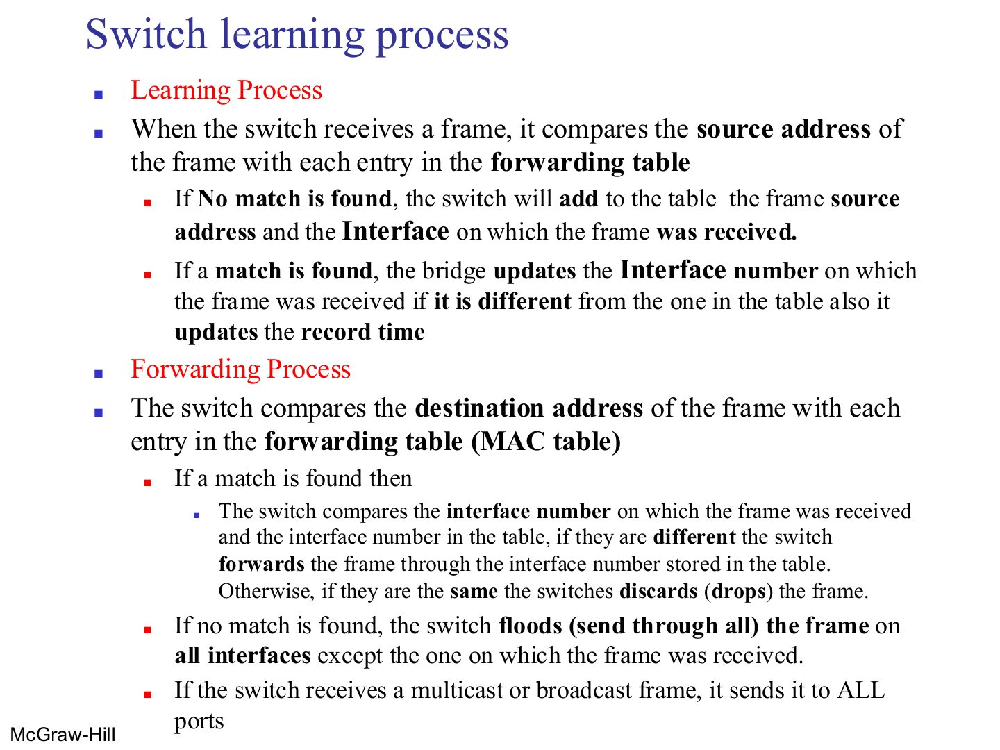
Learning uses the source address. When a frame arrives, the switch looks up the frame’s source MAC in the table. If it isn’t there, the switch adds it with the interface the frame came in on: now it knows where that host is.
If the source MAC is already there, the switch updates the interface if it has changed (the host moved to another port) and refreshes the record time. Forwarding uses the destination address. If the destination MAC is in the table, the switch compares its stored interface with the one the frame arrived on: if they are different, it forwards the frame out of the stored interface only; if they are the same, the destination is on the segment the frame came from, so the switch drops it (it has already arrived). If the destination is not in the table, the switch floods the frame out of every interface except the one it came in on, so it reaches the destination wherever it is. Broadcast and multicast frames are always sent out of all ports. Memory aid: the source teaches, the destination decides.
Memory trick Source teaches, destination decides.
Trap A switch never learns from the destination address.
A switch learns a new table entry from a frame’s:
A switch receives a frame whose destination MAC is not in its table. It:
If the destination is on the same port the frame arrived on, the switch drops the frame.
A host moves from port 2 to port 5. When it next sends a frame, the switch:
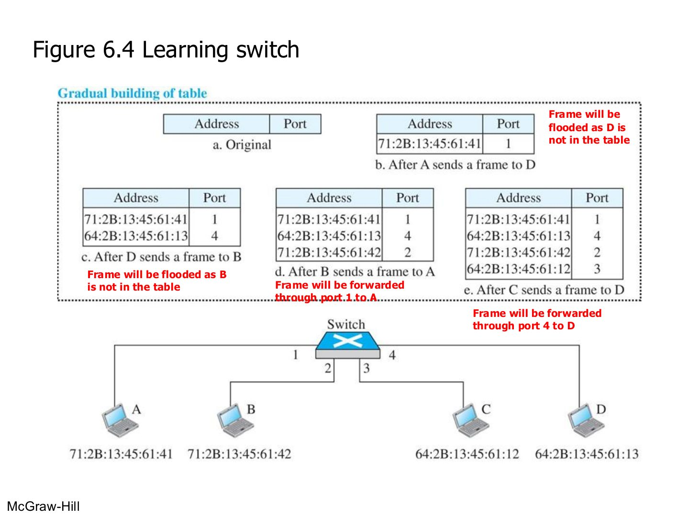
Follow the figure step by step. (a) The table is empty. (b) A sends to D: the switch learns “A is on port 1”; D is unknown, so it floods to every other port. (c) D sends to B: it learns “D is on port 4”; B is unknown, so it floods. (d) B sends to A: it learns B’s port; A is known, so it forwards only to port 1. (e) C sends to D: it learns C’s port; D is known, so it forwards only to port 4. After a few frames the table is complete and flooding stops.
An empty switch has A on port 1, B on port 2, C on port 3, D on port 4. A sends to D, then D sends to A. What does the switch do each time?
A → D: it learns “A is on port 1”; D is unknown, so it floods the frame to ports 2, 3 and 4. D → A: it learns “D is on port 4”; A is known, so it forwards only out of port 1.
After A → D on an empty switch, what does the table contain?
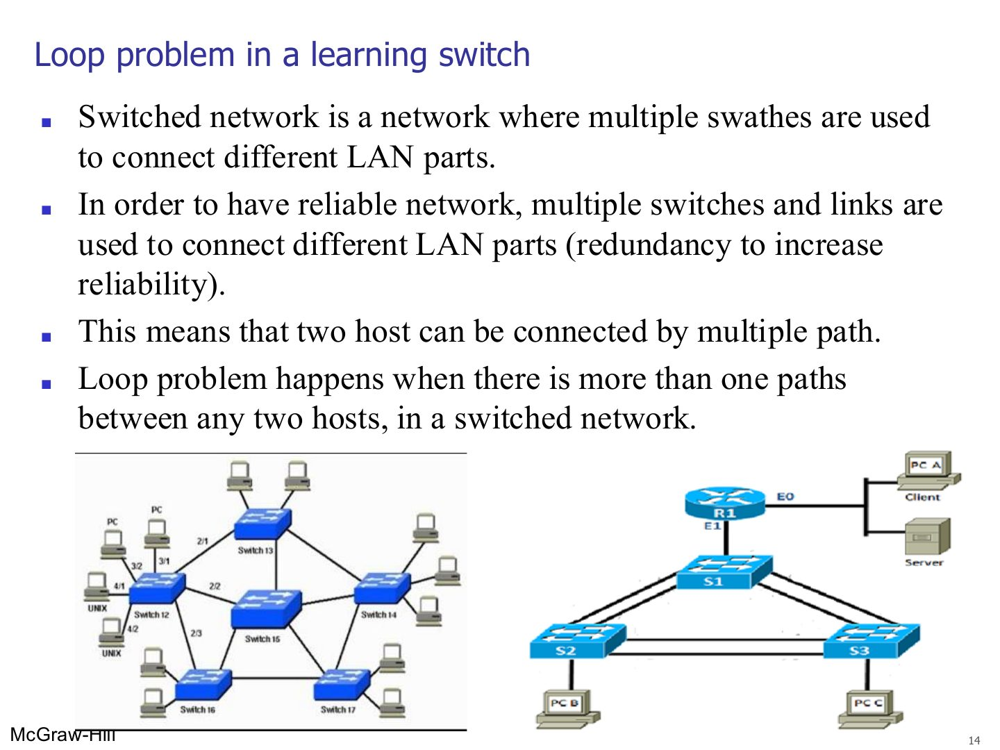
In a switched network, several switches connect the different parts of a LAN. For reliability, designers add redundant switches and links, so that if one link fails, another path still connects the hosts. The side effect: two hosts are now connected by more than one path, which forms a loop. Switches, unlike routers, have no way to notice that a frame has already been around the loop, so loops cause serious trouble (next slide).
Why do switched networks have redundant links?
When does the loop problem occur?
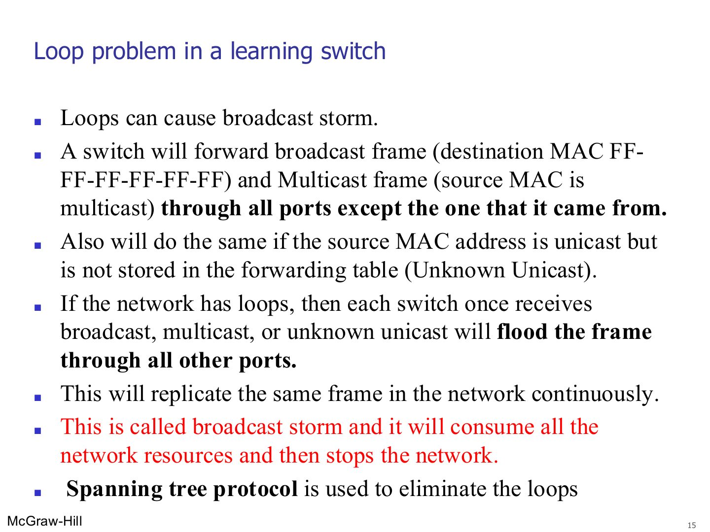
With a loop, each switch that receives the flooded frame floods it again, so copies travel around the loop forever and multiply at every switch. There is nothing like a time-to-live in an Ethernet frame to stop them. Within seconds the copies use up all the bandwidth and the switches’ processing, and the network stops. That is a broadcast storm. The fix is the spanning tree protocol (STP), which removes the loops logically while keeping the redundant links available as backups.
Loops in a switched network cause:
Which protocol removes loops from a switched network?
Which frames get flooded and can circulate in a loop?
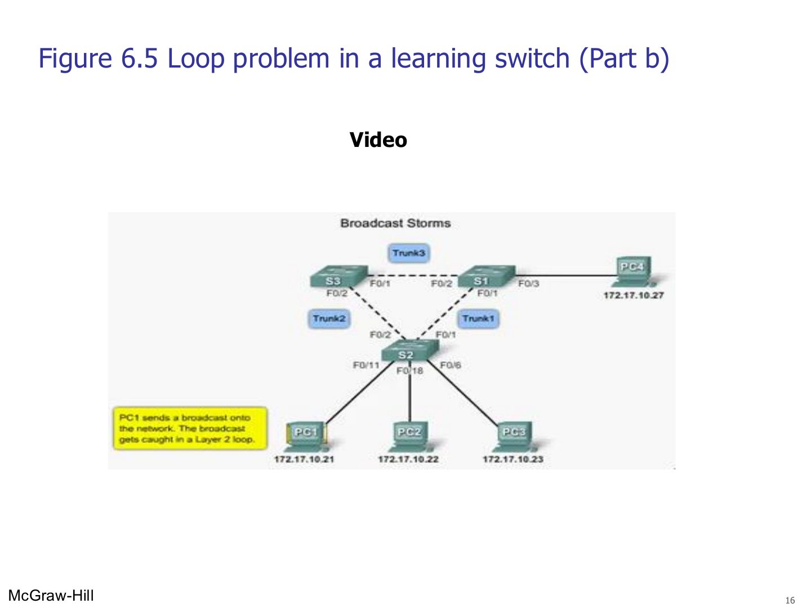
A Packet Tracer simulation of a storm: a single broadcast from PC1 enters a triangle of three switches, and each switch keeps passing copies to the others. The same frame circles round and round, and more copies are made at every step.
In the Packet Tracer storm, what keeps the broadcast circling?
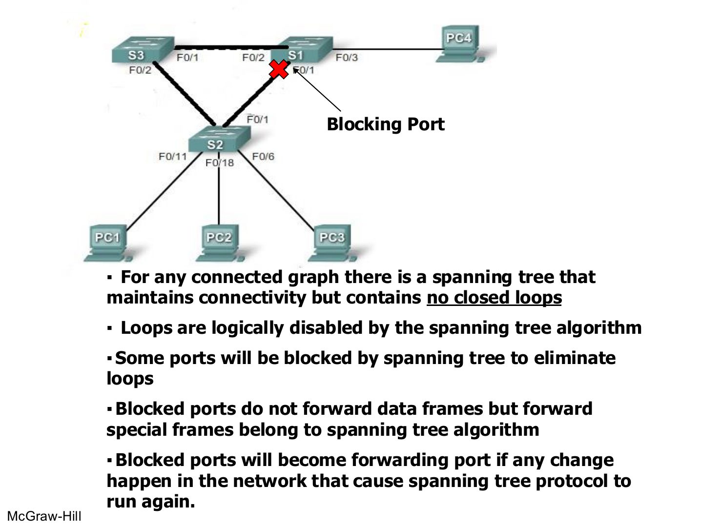
The idea comes from graph theory: for any connected graph there is a spanning tree, a subset of the links that still connects every node but has no closed loops. STP finds such a tree for the switches.
STP removes the loops logically, not physically: no cable is unplugged. It does this by blocking certain ports. A blocked port doesn’t forward ordinary data frames, but it still passes the spanning tree protocol’s own frames, so the switches keep monitoring the network. If something changes (a link fails), STP runs again and a blocked port can become a forwarding port, so the redundant link takes over as a backup.
Trap STP doesn’t remove cables; it logically blocks ports.
Ports blocked by spanning tree forward no frames at all.
A blocked port can become a forwarding port again if the network changes.
How does spanning tree remove loops?
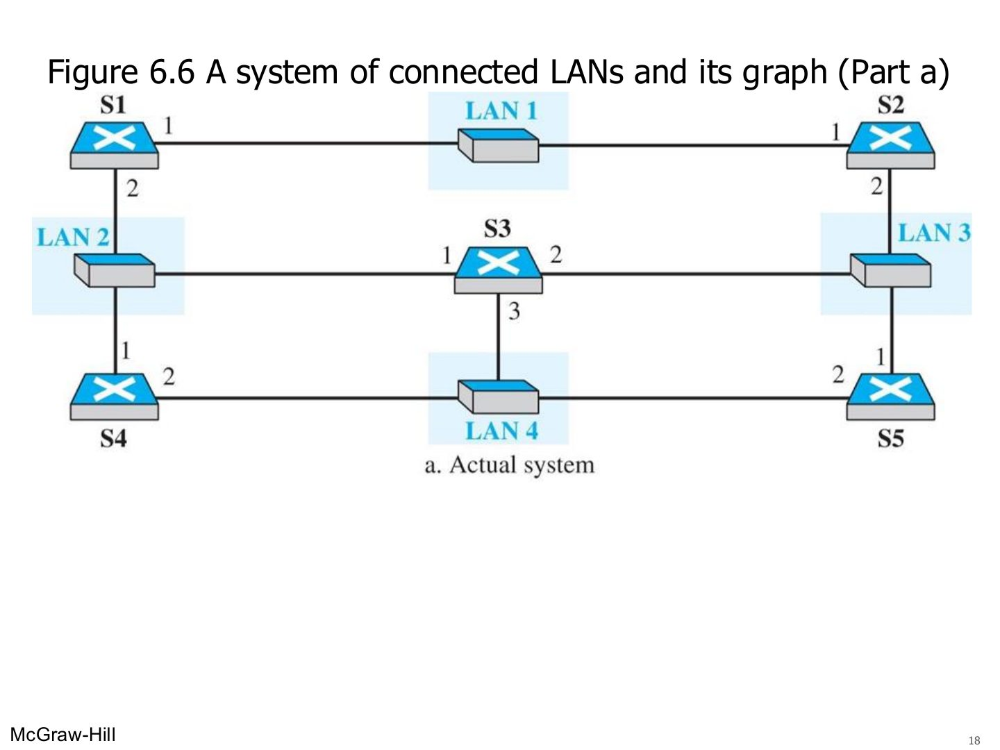
The example network: five switches, S1 to S5, joining four LANs, with redundant paths between them. As a graph, the switches and LANs are nodes and each connection is an edge. Because there are several paths between LANs, there are loops that STP has to break.
In the graph of connected LANs, what makes loops possible?
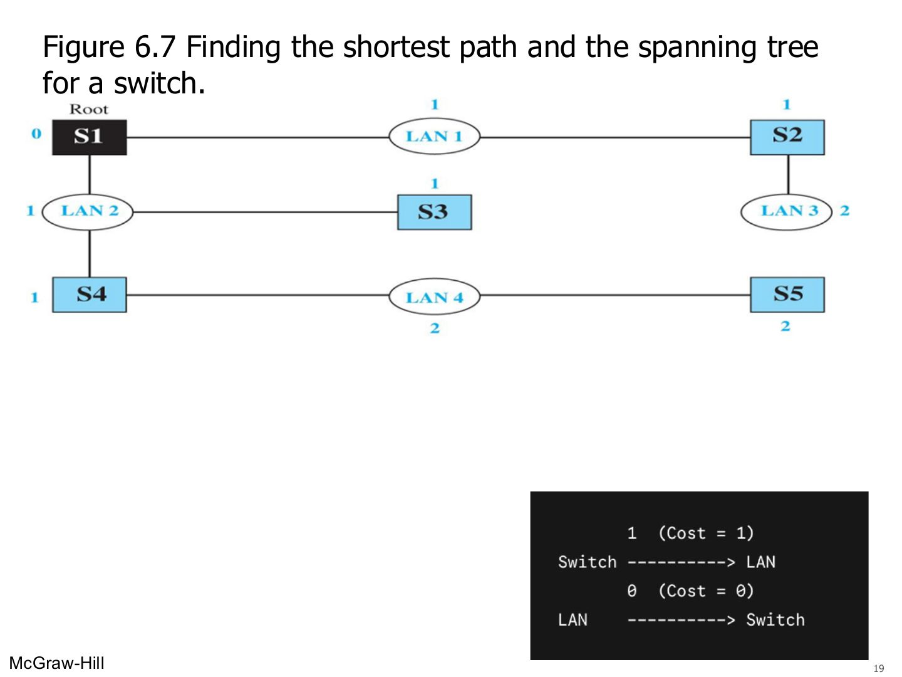
How the spanning tree is found: first one switch is chosen as the root (here S1). Then, for every other switch, STP keeps only the shortest path to the root (costs of 1 from a switch to a LAN and 0 from a LAN to a switch). The links that are on some shortest path are kept; the rest are blocked.
What is the first step in finding the spanning tree?
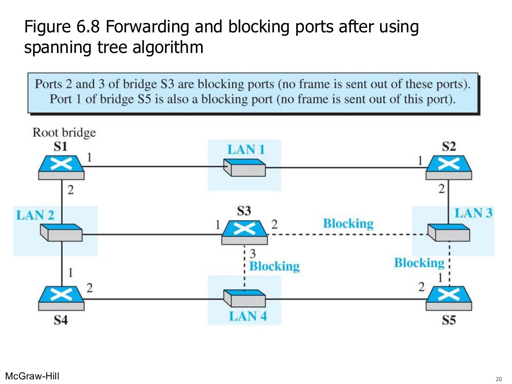
The result: ports 2 and 3 of S3 and port 1 of S5 become blocking ports. Every LAN can still reach every other LAN, but there is now only one active path between any two of them, so no loop remains. Data frames never leave through a blocked port.
After the spanning tree algorithm, which ports are blocked in the example?
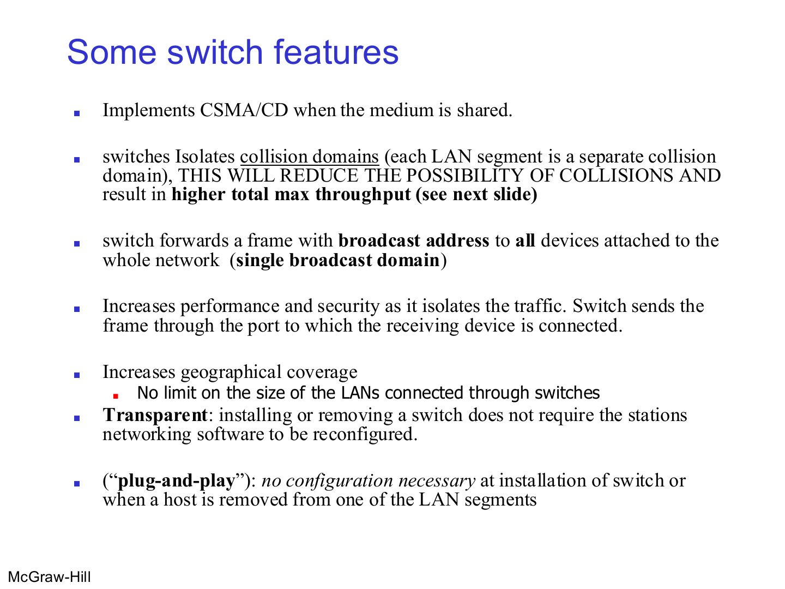
Where the medium is shared, a switch implements CSMA/CD. It isolates collision domains: each segment (port) is its own collision domain, so there are fewer collisions and a higher total throughput, because several pairs of hosts can communicate at the same time.
However, a switch still forwards a broadcast frame to every device on the whole switched network: a switched network without VLANs is a single broadcast domain. Only routers (or VLANs) split broadcast domains. More advantages: better performance and security, because a frame only goes out of the port leading to its destination; wider coverage, with no limit on the size of LANs joined by switches; and it is transparent and plug-and-play: installing or removing a switch, or moving a host, doesn’t require reconfiguring anything.
A network of switches with no VLANs forms how many broadcast domains?
A switch isolates broadcast domains.
What does it mean that a switch is transparent?
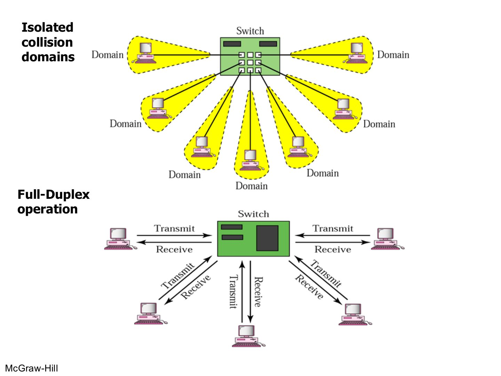
Every switch port is its own collision domain. The lower part of the figure adds full duplex: with separate transmit and receive paths on each link, there are no collisions at all, so CSMA/CD isn’t needed.
Seen again Ch 4, slide 25: Collision domains in switched Ethernet
With full duplex on every switch port, how many collisions can occur?
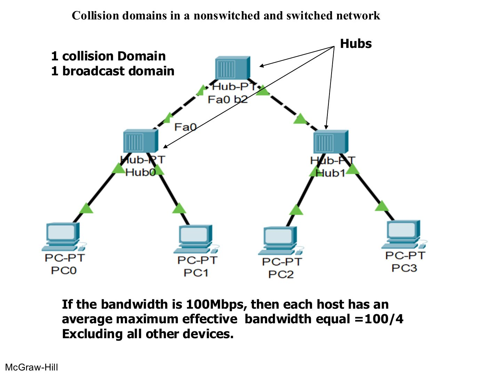
The network built with hubs only (three hubs, four PCs) is one collision domain and one broadcast domain. If the bandwidth is 100 Mbps, the four hosts share it, so each gets an average maximum effective bandwidth of 100/4 = 25 Mbps.
A hub-based LAN of 4 hosts on 100 Mbps gives each host about:
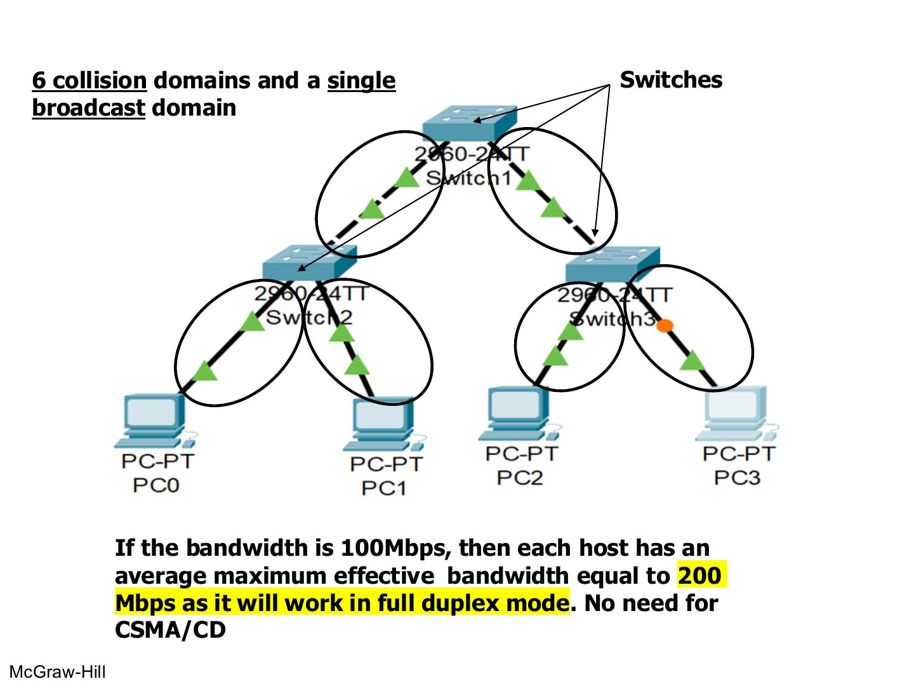
The same network built with switches: count the links between a switch port and another device. There are 6 (four PC links and two switch-to-switch links), so 6 collision domains. With no router, it is still 1 broadcast domain.
Each host now has its own link, and in full duplex it can send and receive at once, so each gets up to 200 Mbps (100 each way) instead of 25 Mbps, and CSMA/CD isn’t needed.
The same 4 hosts on full-duplex switches each get up to:
Three switches and four PCs are joined by 6 links. How many collision domains?
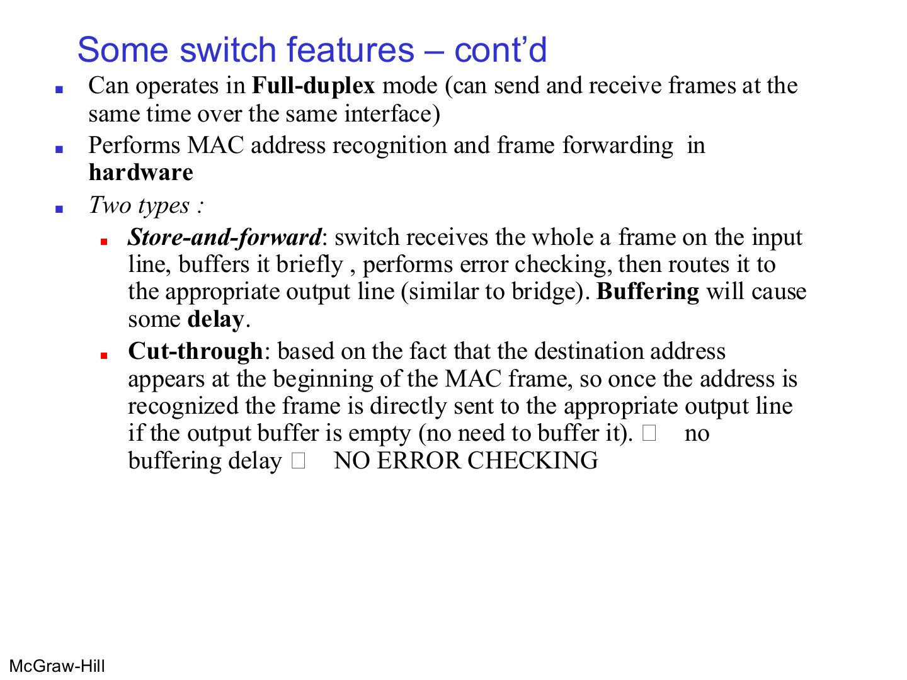
They do MAC address recognition and frame forwarding in hardware (special chips), which is why they are fast. There are two types. Store-and-forward: the switch receives the whole frame, buffers it briefly, checks it for errors (the CRC), and only then sends it to the right output. That is reliable, but the buffering adds delay. Cut-through: since the destination address is at the start of the frame, the switch starts sending the frame to the output port as soon as it has read that address (if the output is free), without buffering the rest. That means no buffering delay, but no error checking: a corrupted frame is forwarded anyway. Memory aid: store-and-forward = safe but slow; cut-through = quick but careless.
Memory trick Store-and-forward = Safe but Slow. Cut-through = Quick but Careless.
Which switching type checks the frame for errors before forwarding?
Cut-through switching starts forwarding after reading the:
What is the drawback of store-and-forward switching?
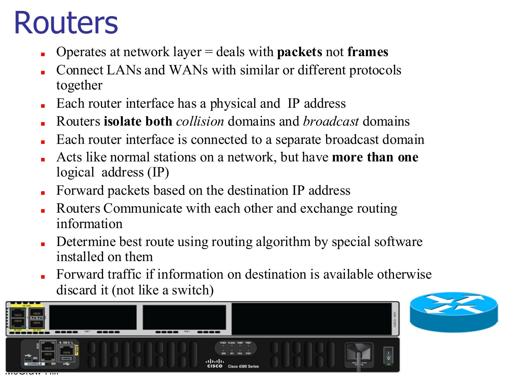
A router works at the network layer, so it deals with packets, not frames. It connects LANs and WANs, even ones using different protocols. Each router interface has both a physical (MAC) address and an IP address.
Routers isolate both collision domains and broadcast domains: a router doesn’t forward broadcasts from one interface to another, so each router interface is a separate broadcast domain. A router behaves like a normal station on each network it joins, but it has more than one logical (IP) address, one per interface.
It forwards packets based on the destination IP address, exchanges routing information with other routers, and uses a routing algorithm to find the best route. If it has no route to the destination, it discards the packet, unlike a switch, which floods frames it doesn’t know where to send.
Seen again Ch 8, slide 3: How routers build their tables
Which device isolates both collision and broadcast domains?
A router floods a packet whose destination is not in its routing table.
Each router interface has:
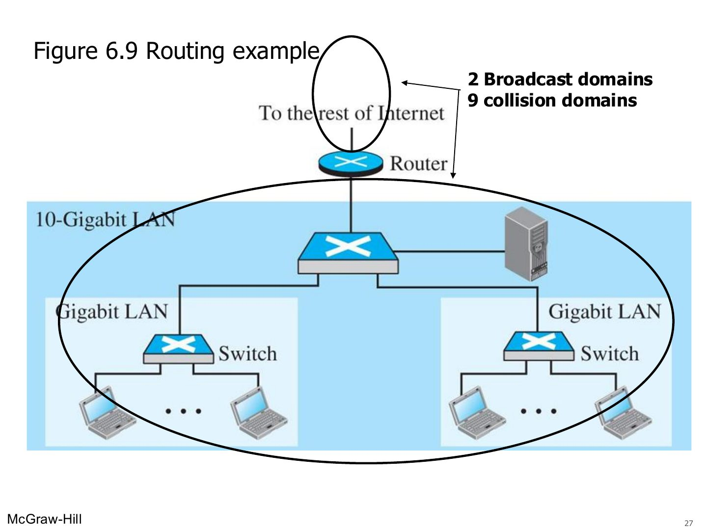
Counting domains in this example. Broadcast domains = the router interfaces in use: 2 (the LAN side and the Internet side). Collision domains = every link that starts at a switch or router port: 9. Method: count each cable that ends at a switch or router port; a hub and everything attached to it count as one.
In the routing example, why are there 2 broadcast domains?
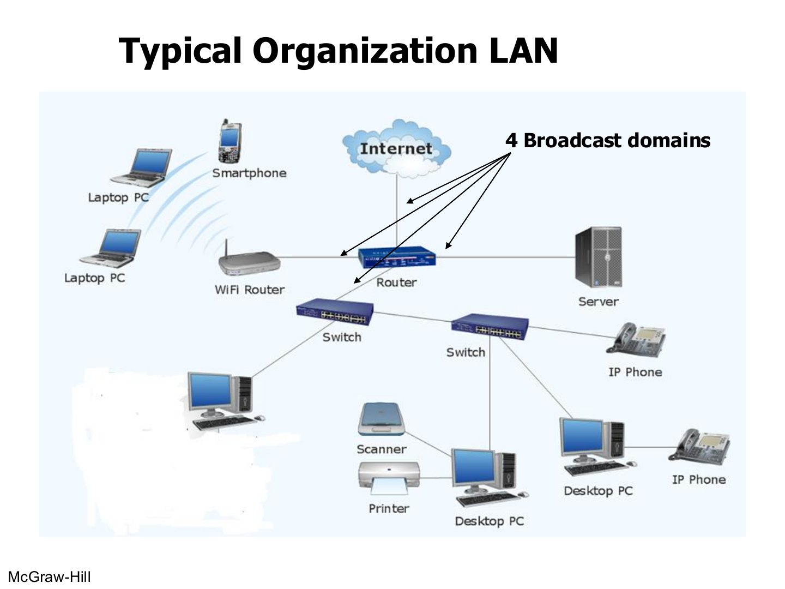
The organisation LAN has 4 broadcast domains, one for each router interface with a network behind it (including the one served by the Wi-Fi router). The counting rules: every switch or router port starts a new collision domain (a hub port doesn’t); every router port starts a new broadcast domain (switch and hub ports don’t, unless VLANs are used).
Tip Counting domains: every switch or router PORT starts a new collision domain (a hub port does not). Every router PORT starts a new broadcast domain (switches and hubs do not, unless VLANs are used).
A router has 3 interfaces. Interface 1 goes to a switch with 5 PCs, interface 2 to a hub with 4 PCs, interface 3 to the Internet. Count the broadcast and collision domains (ignore the Internet side).
Broadcast domains: 2 (one per LAN interface). Collision domains: the switch side has 5 (one per PC link) + 1 (switch–router link) = 6; the hub side is 1 (the hub, its PCs and the router link). Total 7.
Which port does NOT start a new collision domain?
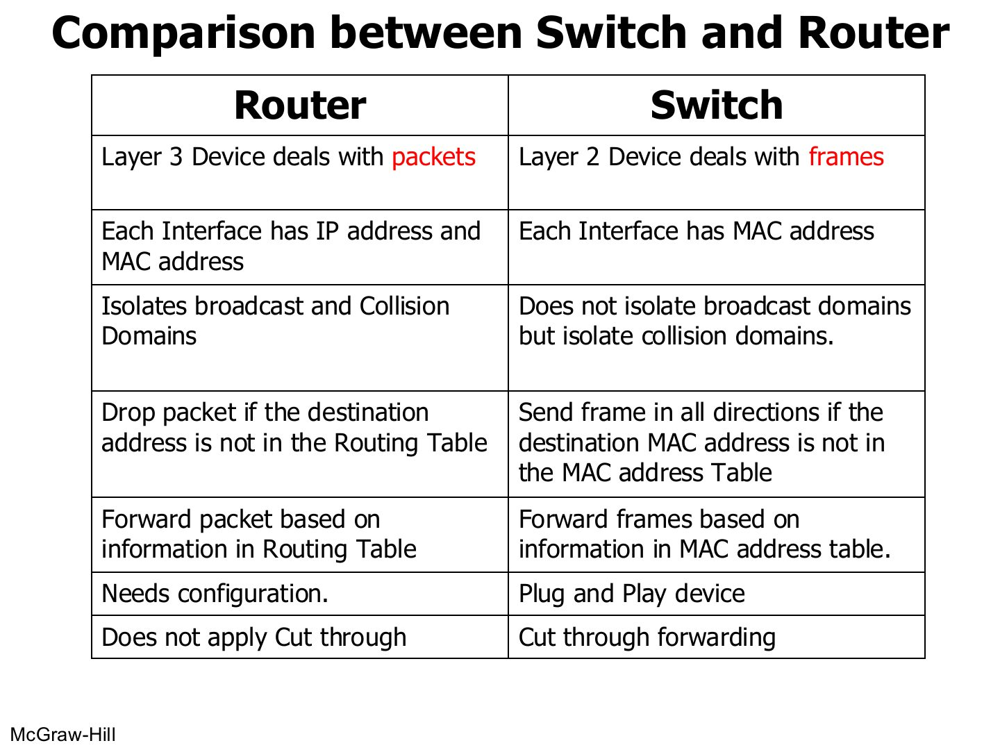
The switch vs. router table, point by point. Layer: router 3 (packets), switch 2 (frames). Addresses: router interfaces have an IP and a MAC; switch interfaces have a MAC. Domains: router isolates broadcast and collision domains; switch isolates only collision domains. Unknown destination: router drops the packet; switch floods the frame. Table: router uses a routing table; switch uses a MAC table. Setup: router needs configuration; switch is plug-and-play. Cut-through: switches can use it; routers don’t. This is the most likely written comparison in the chapter.
Give four differences between a switch and a router.
Layer: a switch is layer 2 (frames), a router is layer 3 (packets). Addresses: switch ports have MACs; router interfaces have an IP and a MAC. Domains: a switch isolates collision domains only, a router isolates collision and broadcast domains. Unknown destination: a switch floods, a router drops. Setup: a switch is plug-and-play, a router needs configuration. Switches can cut through; routers don’t.
Which device needs configuration before it works?
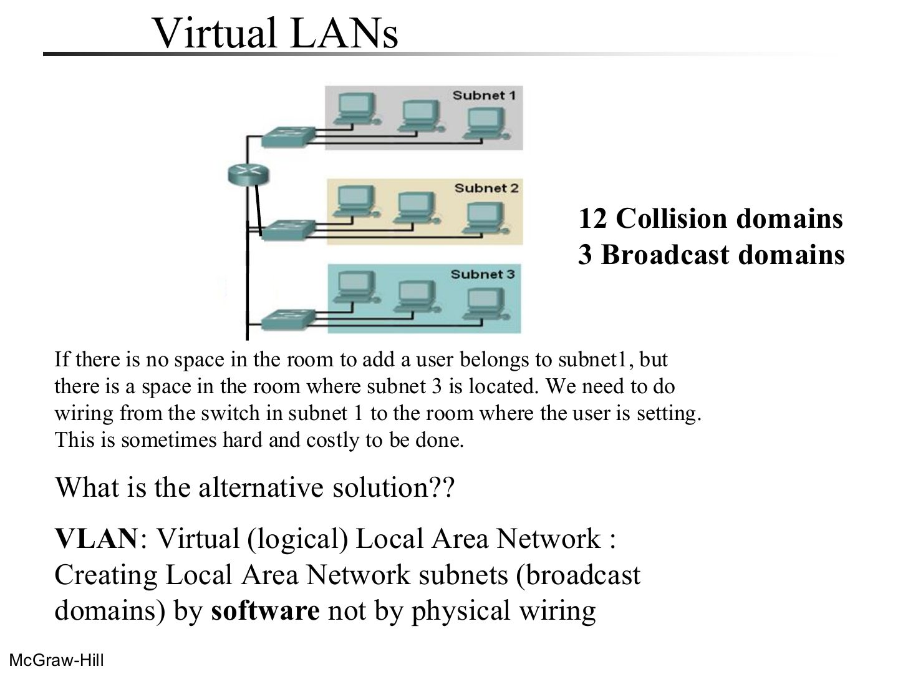
The network here has 12 collision domains and 3 broadcast domains (three subnets, each on its own switch, joined by a router). Now suppose a new user belongs to subnet 1, but there is no space in subnet 1’s room, only in the room where subnet 3 is. To keep the user in subnet 1, you would have to run a cable from subnet 1’s switch to the other room, which is hard and costly.
The alternative is a VLAN (virtual, or logical, LAN): create the subnets, which are broadcast domains, in software instead of by physical wiring. The user plugs into the nearby switch, and the switch is told that this port belongs to subnet 1.
A VLAN creates subnets (broadcast domains) by:
Why is moving a user between subnets hard without VLANs?
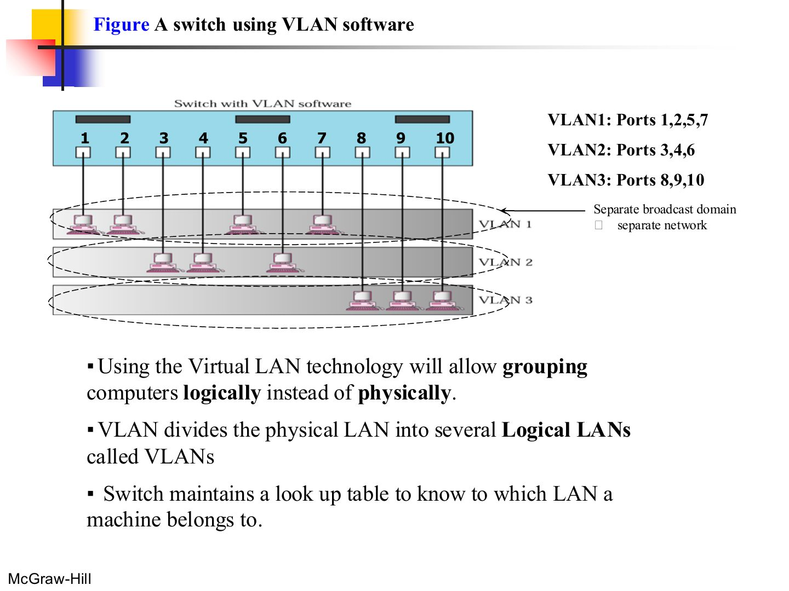
A VLAN groups computers logically, by configuration, instead of physically, by where they are wired. Here one switch has three VLANs: VLAN 1 on ports 1, 2, 5 and 7; VLAN 2 on ports 3, 4 and 6; VLAN 3 on ports 8, 9 and 10. Each VLAN is a separate broadcast domain and a separate network: a broadcast from port 1 reaches only ports 2, 5 and 7. The switch keeps a lookup table of which port (machine) belongs to which VLAN.
One switch is split into 3 VLANs. How many broadcast domains does it have?
A broadcast from port 1 (VLAN 1: ports 1, 2, 5, 7) reaches:
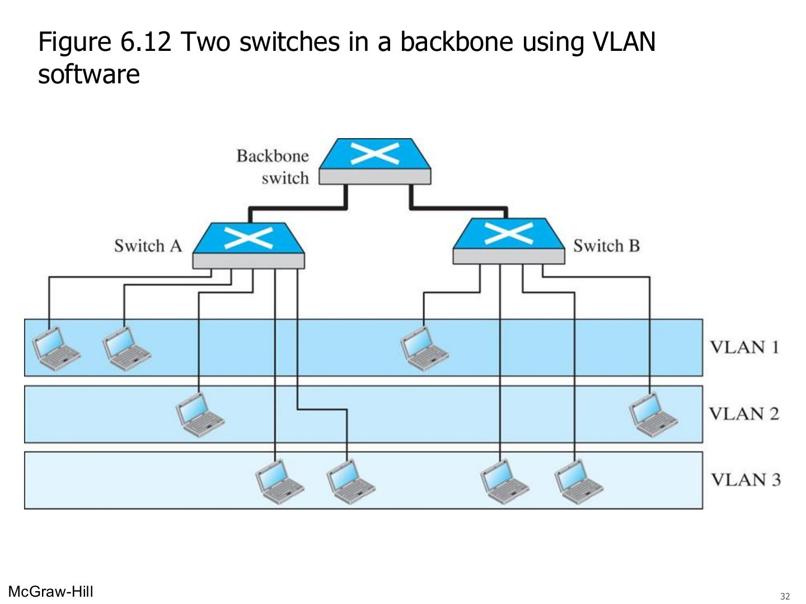
VLANs aren’t limited to one switch. Here switch A and switch B are joined through a backbone switch, and VLANs 1, 2 and 3 each have members on both switches. A broadcast from a VLAN 1 station on switch A reaches the VLAN 1 stations on switch B, but no station in VLAN 2 or 3.
Members of the same VLAN can be on different switches.
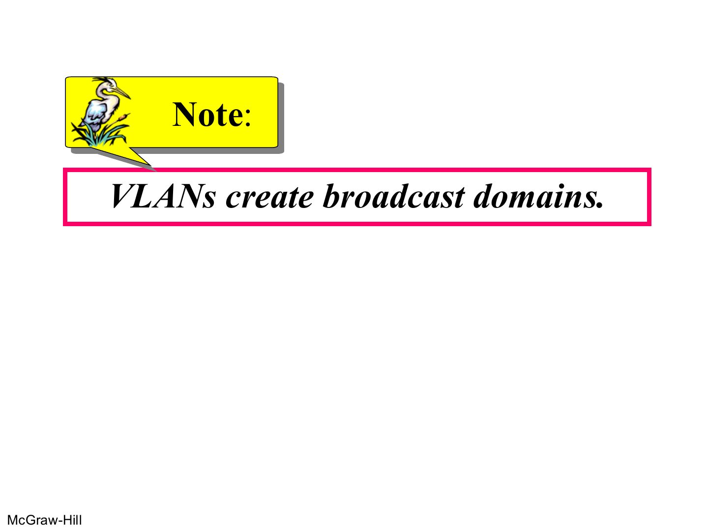
The one line to remember: VLANs create broadcast domains. A switch on its own never splits broadcast domains; a switch with VLANs does, one per VLAN.
VLANs create separate broadcast domains on the same switch.
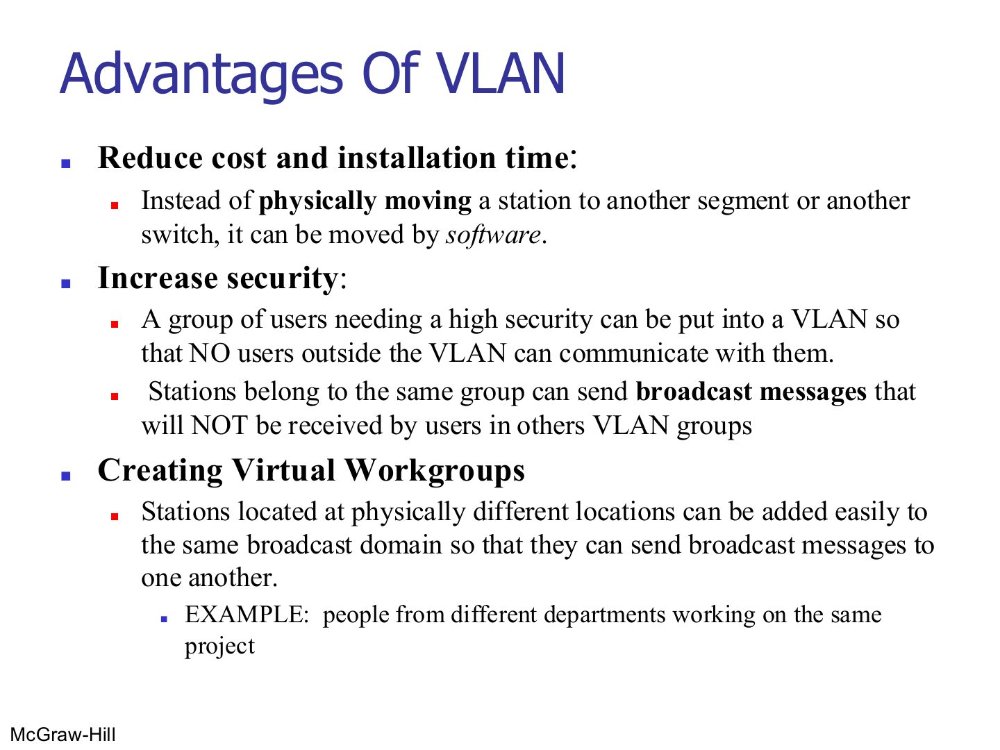
Three advantages. Lower cost and installation time: moving a station to another group is done in software instead of rewiring. More security: a group that needs high security can be put in its own VLAN, so no one outside can communicate with it directly, and its broadcast messages aren’t received by other VLANs. Virtual workgroups: stations in different physical places can be put in the same broadcast domain, for example people from different departments working on one project.
Give three advantages of VLANs.
Lower cost and installation time, because moving a station is done in software; more security, since a group can be isolated and its broadcasts are not seen by other VLANs; and virtual workgroups, where people in different places (for example a cross-department project team) share one broadcast domain.
People from three departments on different floors work on one project and need to share broadcasts. Which VLAN advantage is this?